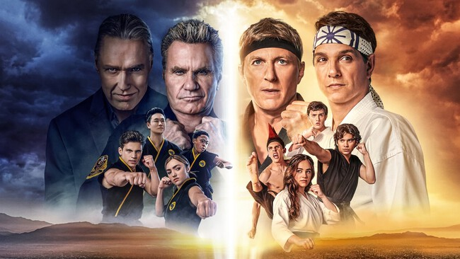
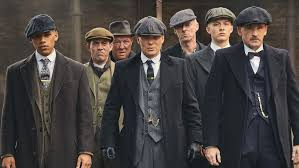

Cobra Kai
snopsis: Cobra Kai es la secuela de la famosa saga cinematográfica Karate Kid. La serie sigue la historia 30 años después del campeonato de 1984, en el que Johnny no se encuentra en el mejor momento de su vida por lo que decide volver a abrir el famoso Dojo Cobra Kai para darle un giro.
peaky blinders
snopsis: Peaky Blinders es un drama de BBC que narra la historia de la familia gitana Shelby y su banda de gángsters, un grupo de personas características por sus boinas con cuchillas y dueñas de los asuntos ilegales, que dominan las apuestas clandestinas y se rigen mediante extorsiones.
Stranger Things
A raíz de la desaparición de un niño, un pueblo desvela un misterio relacionado con experimentos secretos, fuerzas sobrenaturales aterradoras y una niña muy extraña. Ve todo lo que quieras.